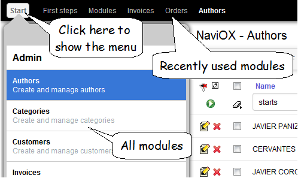
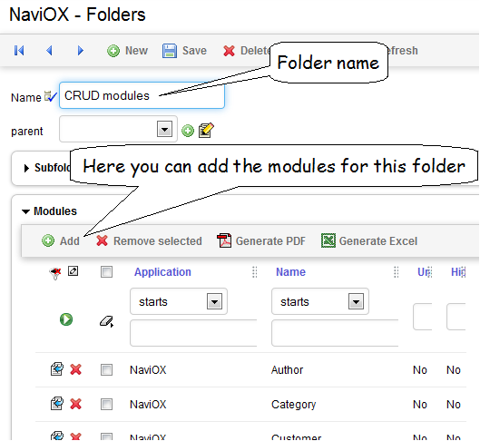
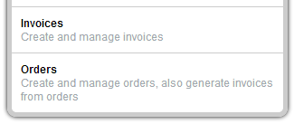
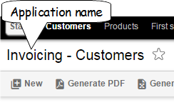

Module navigation
Menus
Click (or tap) on the
Start button to show a menu with the modules of your application, choose one and click (or tap) on it. On top you have links to the recently used modules.

Click on the
Start button again to hide the menu. Moreover, when you choose a module the menu is automatically hidden.
Folders
XavaPro adds the module Folders to your application, in the
Admin folder. This module allows you to organize the modules in the menu in a hierarchical way.

It's just to create a new folder and assigning some modules to it. If you want to translate the folder name, use it as key in the i18n labels files.
The hierarchical menu is only available in
XavaPro. Plain OpenXava uses a list of modules with a search box.
Titles and descriptions for modules and the application
Titles and descriptions are obtained from the i18n files of your application.
# MyApplication-labels_en.properties
# Application title and description
Invoicing=Invoicing
Invoicing[description]=Manage invoices and orders
# Modules titles and descriptions
Invoice.module=Invoices
Invoice.module[description]=Create and manage invoices
Order.module=Orders
Order.module[description]=Create and manage orders, also generate invoices from orders
With the above entries OpenXava knows how to display the name and description of
Invoice and
Order module in English.

The application name is shown in the header of each module:

If you do not want to show the application name add the
showApplicationName (new in v5.5) entry to your
naviox.properties (placed in
properties folder):
showApplicationName=false
Behavior customization
By default when the user sign in he starts working in the last module he was working on. To change this behavior and to start always in
First steps page add the next entry to
naviox.properties (placed in
properties folder):
startInLastVisitedModule=false
If you want that the first page on entering will not be
First steps but your own page or module, edit
firstSteps.jsp, located in
web/naviox, remove all the content and place a redirection on it, thus:
<jsp:forward page="/m/MyInitialModule"/>
In order that the top list of recently visited modules will be clear after sign in, add the next entry to
naviox.properties:
rememberVisitedModules=false
If you want that the
Start button on top left corner to show the list of modules will not be present when the user is not logged, add the next entry to
naviox.properties:
showModulesMenuWhenNotLogged=false
The button will not be shown even if there are modules available for not logged users.
To have certain modules always present on top menu use
fixModulesOnTopMenu (new in v5.9) in
naviox.properties:
fixModulesOnTopMenu=Invoice, Order
Just the list of modules separated by commas. The modules will be always on the top bar, unless the user has no rights to access them.